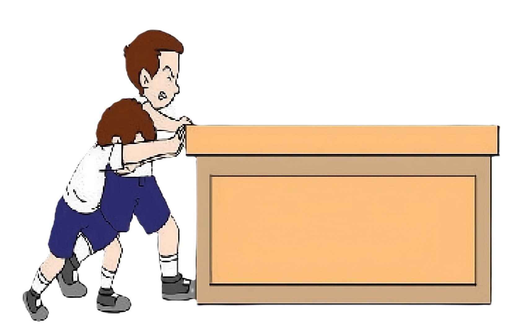
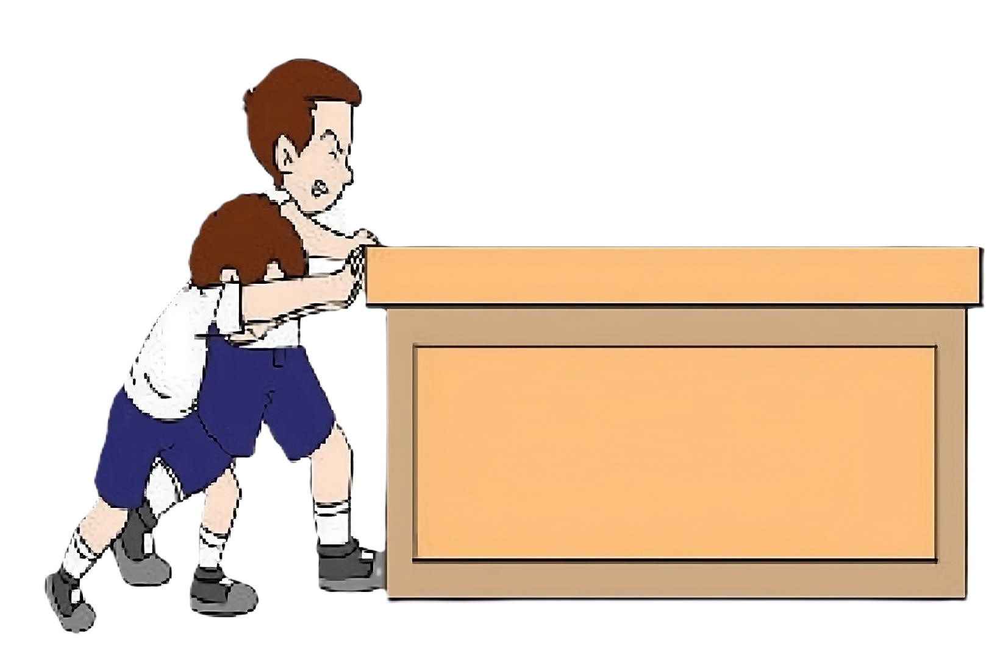

A

Halo, Ali kembali lagi menemani kamu!
Sekarang kita akan belajar jenis transformasi Translasi

Sebelum masuk ke pengertian translasi, ayo kita bantu siswa siswa itu menggeser meja
Klik tombol dorong hingga meja sampai ke ujung
 


Bagus!!! Peristiwa menggeser meja tadi bisa dikatakan translasi lohh.

Translasi adalah proses memindahkan semua titik pada
bangun datar dengan arah dan jarak yang sama

Cobalah tekan lalu pindahkan titik A dibawah
A
A'

Kamu mungkin tau arah perpindahan pada titik A tadi, tapi bagaimana dengan jaraknya?
Supaya kita bisa tau jaraknya, kita perlu menggunakan bidang kordinat

BIDANG KORDINAT
Setiap titik berpindah satu kotak maka jarak perpindahannya bernilai
1 satuan
Perhatikan contoh di bawah, titik berpindah sejauh 3 satuan ke kanan
Contoh lainnya, titik dibawah berpindah 2 satuan ke
bawah


Ayo tebak kemanakah arah perpindahan titik B di bawah?
B
B'


Berapa jarak perpindahan titik C ?
B
B'

Jadi titik B ditranslasikan sejauh 1 satuan ke kiri dan 3 satuan ke bawah
B
B'

Ternyata jarak perpindahan 1 satuan ke kiri dan 3 satuan ke bawah bisa ditulis menjadi
Aturannya ada dibawah yaa.
Bagian pertama menandakan arah horizontal ( kiri / kanan ).
JIka bernilai positif maka ke kanan, jika bernilai negatif maka ke kiri.
Bagian kedua menandakan arah vertikal ( atas / bawah ).
JIka bernilai positif maka ke atas, jika bernilai negatif maka ke bawah.

Apakah persegi ABCD mengalami translasi?

A
B
C
D
A'
B'
C'
D'
Persegi ABCD bertranslasi karena titik A, B, C, dan D berpindah dengan arah dan jarak
yang sama
A
B
C
D
A'
B'
C'
D'
Persegi EFGH tidak bertranslasi karena titik arah dan jarak perpidahan titik E, G
berbeda dengan titik F, H
E
F
G
H
E'
F'
G'
H'

Yahhh, sudah berakhir...
Setelah ini, akan ada rangkuman, contoh dan tes yang bisa kamu kerjakan. Dadah!